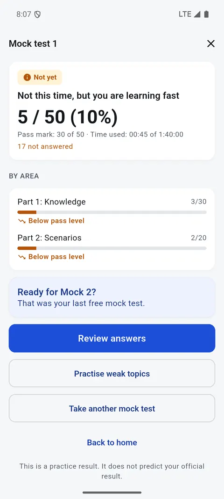
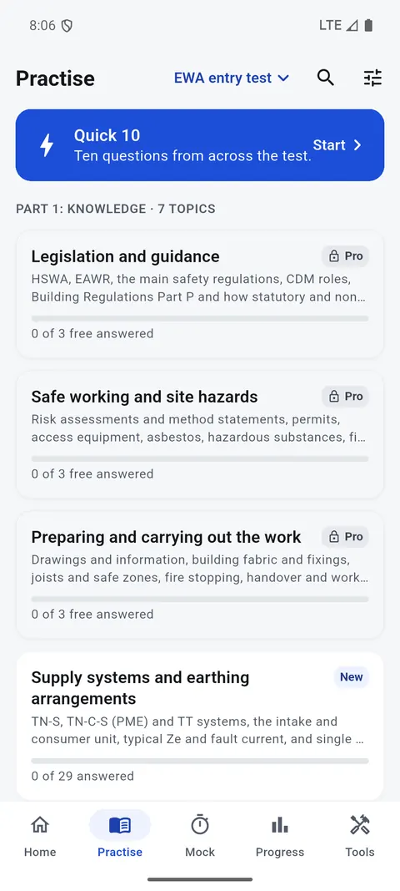
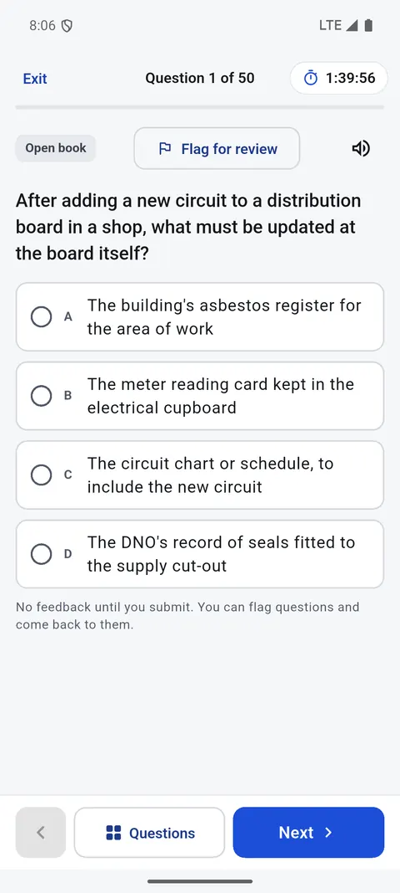
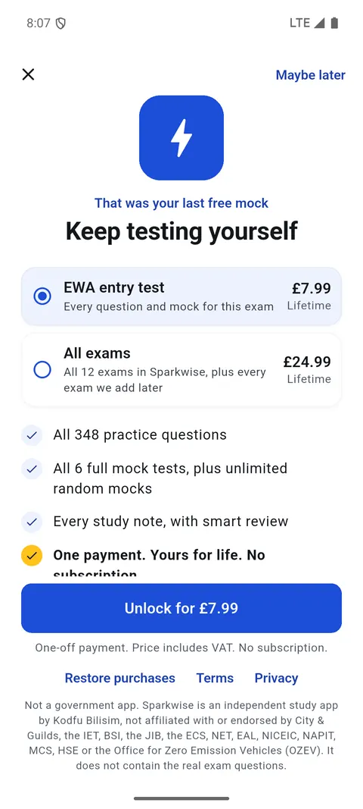

Not a government app. Sparkwise is an independent study app made by Kodfu Bilisim. It is not affiliated with or endorsed by the IET, BSI, City & Guilds, EAL, NET, the ECS, the JIB, NICEIC, NAPIT, MCS, HSE or OZEV. It does not contain the real exam questions and never reproduces BS 7671 text.
All exams › EWA entry test
EWA entry test: practice questions and answers
The EWA entry test is the gate to the Experienced Worker Assessment route for electricians with years in the trade but no formal qualification. It is 50 on-screen questions in 100 minutes, open book with BS 7671 and the IET On-Site Guide, and you need at least 60% in both parts. This page sets out the format and what each part covers, then gives you 8 free practice questions with answers. Sparkwise has 348 questions and timed mocks in the same format.
Practise the EWA entry test: get Sparkwise on Google Play Try 8 free questions
Free in the app: 80 EWA questions and one full mock. EWA entry test unlock: £7.99 once for all 348 questions and every mock. No subscription. Android now; iPhone version not yet available.
On this page
Format and pass mark
The test is EAL’s Electrical Underpinning Knowledge and Understanding Test for the experienced worker route, taken through NICEIC or NAPIT (NAPIT calls it the Experienced Worker Entry Test). There are two versions, Installation/Maintenance Electrician and Domestic Electrician; Sparkwise follows the Installation/Maintenance version.
| Item | EWA entry test |
|---|---|
| Questions | 50, on screen: Part 1 mostly four-option multiple choice, Part 2 scenario-based questions |
| Time | 100 minutes |
| Pass mark | At least 60% in Part 1 and at least 60% in Part 2 |
| Books | Open book: the current IET On-Site Guide and BS 7671:2018 (now +A4:2026), plus a non-programmable calculator |
| How | In person at an approved centre, in set windows |
| Resits | Two resits in the same window; after that, a 12-month wait |
| Sparkwise mock | 50 questions, 100 minutes, scored overall and shown by Part |
Sources: the EWA entry test page of the Electrotechnical Skills Partnership (TESP), NICEIC’s test coverage information and NAPIT’s EWET page. How the 50 questions split between the parts is not published. City & Guilds runs a different entrance test for the same route (2346-04), with its own format; this page is about the EAL test.
What Part 1 and Part 2 cover
Part 1 checks the knowledge behind the job; Part 2 asks you to apply it to scenarios. Sparkwise groups its questions the same way:
| Part | Sparkwise topic | Questions in the app |
|---|---|---|
| Part 1: knowledge | Legislation and guidance | 32 |
| Safe working and site hazards | 30 | |
| Preparing and carrying out the work | 33 | |
| Supply systems and earthing arrangements | 29 | |
| Earthing, bonding and protection | 32 | |
| Electrical science and calculations | 37 | |
| How electrical components work | 31 | |
| Part 2: scenarios | Wiring systems and circuits | 29 |
| The circuit design procedure | 38 | |
| Safe isolation | 24 | |
| Inspection, testing and certification | 33 |
Because you need 60% in each part, a strong Part 1 cannot carry a weak Part 2. 74 Sparkwise questions, such as Ohm’s law, power, cable sizing and maximum Zs, have a step-by-step worked solution.

See each part, not just the total
After a Sparkwise EWA mock you see your score for Part 1 and Part 2 separately, so you know whether the knowledge or the scenarios need more work before the real test.
8 free EWA entry test questions
Questions from both parts, with the answer and a short explanation. They are original Sparkwise questions written from BS 7671, health and safety law and public guidance, not EAL’s questions. There is no genuine “EWA entry test questions and answers PDF”: the real questions are not published.
Question 1 · Choose one answer
In an office building, who holds the duty to manage asbestos under the Control of Asbestos Regulations 2012?
- The owner or whoever is responsible for maintenance and repair
- The local authority building control department for the area
- The electrical contractor carrying out work in the building
- The HSE inspector who covers the district the office is in
Show the answer
Answer A: The owner or whoever is responsible for maintenance and repair
Reg 4 places the duty to manage on the dutyholder: the person with responsibility for maintaining or repairing non-domestic premises, usually the owner or under a lease. Contractors must ask for the asbestos information before work.
Source: CAR 2012 reg 4
Question 2 · Choose one answer
Which statement about the main types of asbestos is correct?
- Only blue asbestos is harmful, so white asbestos is safe to drill
- White (chrysotile) was used most widely, and every type is hazardous
- Asbestos was banned in the UK in 1970, so any later buildings are clear
- Brown asbestos becomes safe to cut once it has been painted over
Show the answer
Answer B: White (chrysotile) was used most widely, and every type is hazardous
Crocidolite (blue), amosite (brown) and chrysotile (white) can all cause fatal diseases. Chrysotile was the most common. All use was banned in the UK by 1999, so buildings built or refurbished before 2000 may contain it.
Source: HSE · asbestos types and ban
Question 3 · Select TWO answers
Select TWO situations where a PME earthing terminal must not be used for the circuits concerned.
- A lighting circuit in a first-floor flat
- A ring final circuit in a house kitchen
- Socket-outlets supplying caravan pitches
- Temporary distribution on a construction site
Show the answer
Answer C: Socket-outlets supplying caravan pitches, D: Temporary distribution on a construction site
BS 7671 bars the PME earth from caravan pitch socket-outlets and, apart from limited exceptions such as fixed site buildings, from construction site installations. Ordinary domestic circuits may use it.
Source: BS 7671 Sections 704 and 708
Question 4 · Choose one answer
A 32 A Type B circuit has a maximum Zs of 1.37 Ω and the measured Ze is 0.80 Ω. What is the highest R1 + R2 the circuit can have?
- 0.57 Ω
- 1.37 Ω
- 0.80 Ω
- 2.17 Ω
Show the answer
Answer A: 0.57 Ω
Since Zs = Ze + (R1 + R2), the cable can use up only what Ze leaves: 1.37 - 0.80 = 0.57 Ω. Adding instead of subtracting gives 2.17 Ω.
Worked solution. Formula: (R1 + R2) max = Zs max - Ze
- Subtract: 1.37 - 0.80 = 0.57 Ω
Common mistake: Adding Ze to Zs (2.17 Ω) or treating Ze as the limit.
Source: BS 7671 Table 41.3 · OSG Appendix B
Question 5 · Select TWO answers
Select TWO correct statements about remote stop and start buttons on a contactor circuit.
- Extra start buttons are normally closed and wired in series
- Extra start buttons are normally open and wired in parallel
- Extra stop buttons are normally closed and wired in series
- Extra stop buttons are normally open and wired in parallel
Show the answer
Answer B: Extra start buttons are normally open and wired in parallel, C: Extra stop buttons are normally closed and wired in series
Any stop button must be able to break the coil circuit, so stops are NC in series. Any start button must be able to complete it, so starts are NO in parallel.
Source: Motor control circuit principles
Question 6 · Select TWO answers
Which TWO are advantages of steel conduit over PVC conduit? Select TWO.
- It can serve as a protective conductor if well jointed
- It gives better protection against impact and crushing
- It never needs earthing, as no fault can reach it
- It does not corrode in damp or chemical-laden areas
Show the answer
Answer A: It can serve as a protective conductor if well jointed, B: It gives better protection against impact and crushing
Steel conduit is strong and, with sound joints, can be used as the circuit protective conductor. It can corrode in damp or chemical areas, where PVC is often better, and as a metal enclosure it must be earthed.
Source: BS 7671 Reg 543.2.1 · protective conductor types
Question 7 · Select TWO answers
Work on a cooker circuit is finished. Which TWO should be done before you remove your lock and restore the supply? Select TWO.
- Remove other people's padlocks from the hasp to save them the trip
- Check that covers, terminals and connections are secure and tools cleared
- Leave the caution notice off so nobody worries when power returns
- Tell anyone affected that the supply is about to be switched back on
Show the answer
Answer B: Check that covers, terminals and connections are secure and tools cleared, D: Tell anyone affected that the supply is about to be switched back on
Before re-energising, confirm the work is complete and safe, covers are refitted and tools and people are clear, and warn those affected. Never remove another person's lock: each person removes their own when their work is done.
Source: ESF Best Practice Guide 2 · re-energising
Question 8 · Select TWO answers
Which TWO checks form part of functional testing at the handover of a new shop installation? Select TWO.
- Measuring the R1 + R2 of each final circuit at the far end
- Measuring the insulation resistance of the submain cable
- Checking that interlocks and emergency stop controls work
- Operating isolators and switches to see they work as intended
Show the answer
Answer C: Checking that interlocks and emergency stop controls work, D: Operating isolators and switches to see they work as intended
Functional testing confirms that switchgear, controls, interlocks and emergency switching work correctly once energised. Continuity and insulation resistance are dead tests done earlier in the sequence.
Source: BS 7671 Reg 643.10 · functional testing
You’ve seen 8 of 348 questions for the EWA entry test
The Sparkwise app has all 348 across 11 topics, each with an explanation and where to look, and 74 calculations have a step-by-step worked solution. It also has timed 50-question mocks of 100 minutes, scored by Part 1 and Part 2.
80 of them are free in the app. The EWA entry test unlock is £7.99 one-off: every question and every mock for this exam. Or get All exams, £24.99 one-off: all 12 exams in Sparkwise and any exam added later. No subscription.
Android now; iPhone version not yet available.
How to prepare
- Fill the gaps in the theory. Years on the tools teach the practice; Part 1 also asks for the science behind it: resistance and resistivity, power, and how components such as contactors and transformers work.
- Learn your way round two books. With the On-Site Guide and BS 7671 open, many questions come down to finding the right table quickly.
- Work through the design procedure. Part 2 scenarios follow the steps: design current, device rating, correction factors, cable size, voltage drop and fault protection.
- Plan for the rest of the route. After a pass you enrol on the EWA within 6 months, build a portfolio and finish with the AM2E. Sparkwise has the AM2 knowledge test too.
FAQ
How many questions are in the EWA entry test?
50 questions in 100 minutes, in two parts: knowledge questions in Part 1 and scenario-based questions in Part 2. You need at least 60% in each part.
Is the EWA entry test open book?
Yes. You can use the current IET On-Site Guide and BS 7671, and a non-programmable calculator.
Is there an EWA entry test questions and answers PDF?
Not a genuine one: the real questions are not published. Practise with original questions on the same coverage instead, such as the free ones on this page and the 348 in Sparkwise.
What happens if I fail the EWA entry test?
You can resit twice within the same window. If you still have not passed, you wait 12 months before trying again.
How much is the EWA entry test in Sparkwise?
Free to download, with 80 EWA questions and one full mock free. The EWA entry test unlock is a one-off £7.99. All exams, a one-off £24.99, adds the AM2 knowledge test, the 18th Edition and every other exam in the app.
Practise the EWA entry test in the Sparkwise app
348 original questions for the EWA entry test, each with an explanation and where to look, and timed 50-question mocks of 100 minutes, scored by Part 1 and Part 2. Spaced review brings back the questions you got wrong.
- Works offline. No ads, no account, no data collected.
- The same app has the 18th Edition, the ECS HS&E and every other exam: see all 12.



Free: two full topics and three questions in every other topic, and one full mock (80 questions).
EWA entry test, £7.99 one-off: every question and every mock for this exam.
All exams, £24.99 one-off: all 12 exams in Sparkwise and every exam we add later. No subscription.
Android now; iPhone version not yet available. Sparkwise helps you prepare; it cannot promise a pass.
Where the exam facts come from
The format, time and pass mark above come from these public pages. Check them, or ask your centre, before you book.
- EWA entry test (Electrotechnical Skills Partnership (TESP))
- Experienced Worker Entry Test (NAPIT)
- BS 7671 18th Edition wiring regulations (IET)
Exam details can change. Sparkwise is not linked to any awarding or assessment body.